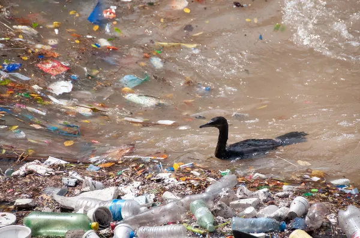

Relatório urbano
A cidade
respira fumaça.
O ar está carregado, a água escureceu e o solo já não sustenta mais a vida de forma limpa. Este arquivo reúne os pontos críticos, os impactos e as respostas possíveis para a crise ambiental.
Ver impacto
Navegue no arquivo
O que está em risco
O problema não é visível só no céu. Ele vive em cada rua.
Relatório geral • leitura 001